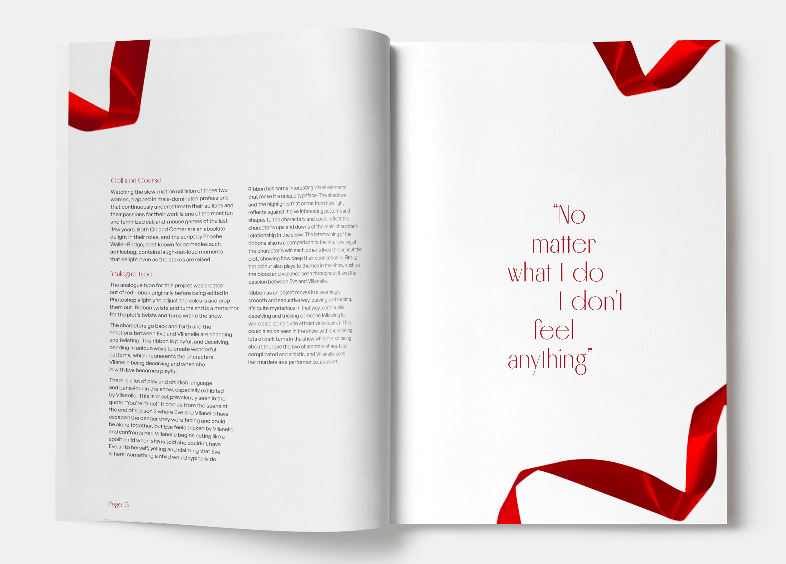
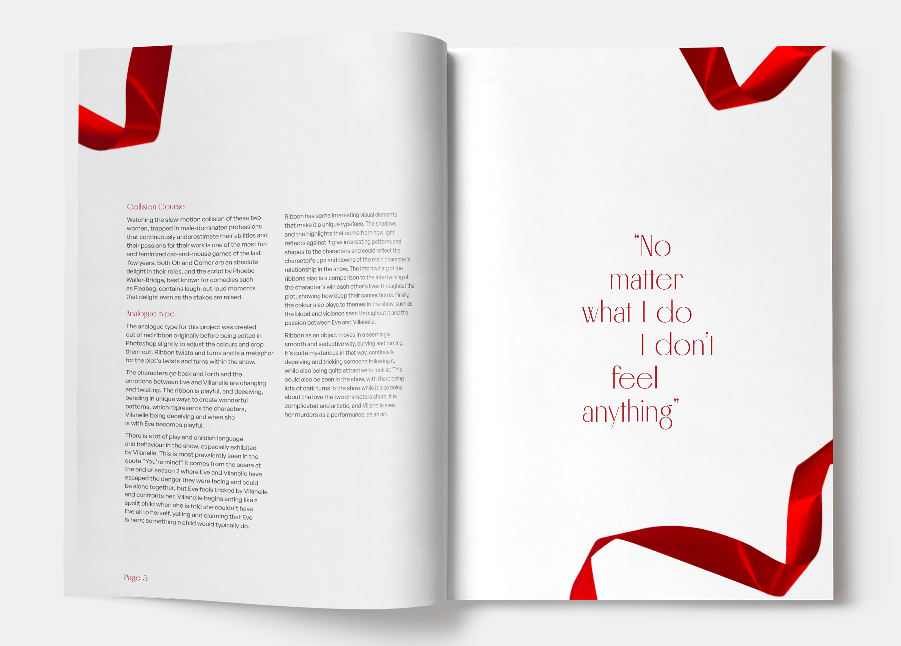

Killing Eve Mag.
The hero of the design, the analogue type, is created out of ribbon to best express the style of the show, Killing Eve. Visually, the colour red and ribbons are already used within the show. Ribbons create a twisting, mesmerising path, and the way it curves and flows through a scene is quite seductive. This are all themes expressed through the show.
The layout guides the reader around the page using the ribbon and white space. By using lots of blank space around the design the text is the main focus of the page, and brings the most attention to the analogue type.
• 3x Magazine spreads
• 1x
Analogue type - Hero of design

 
